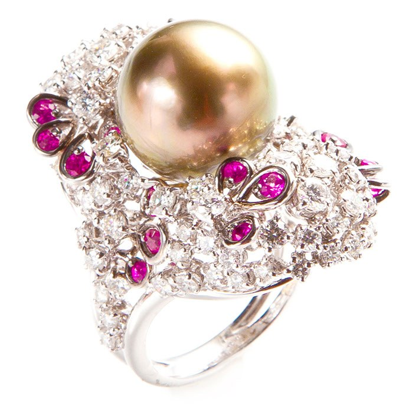
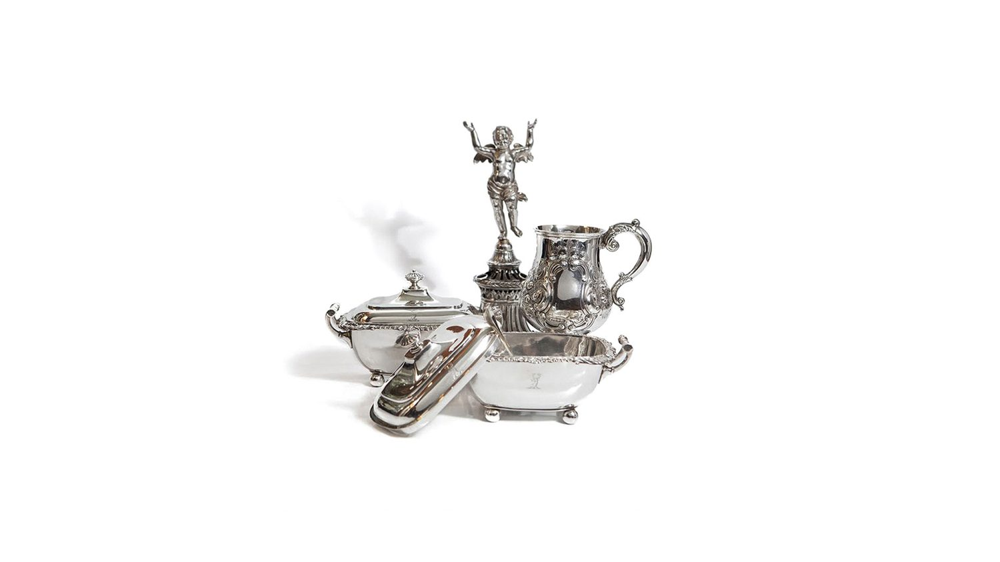
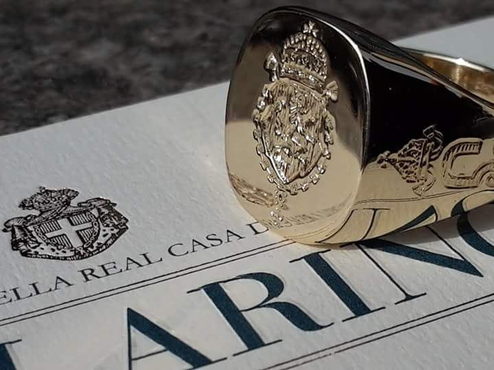
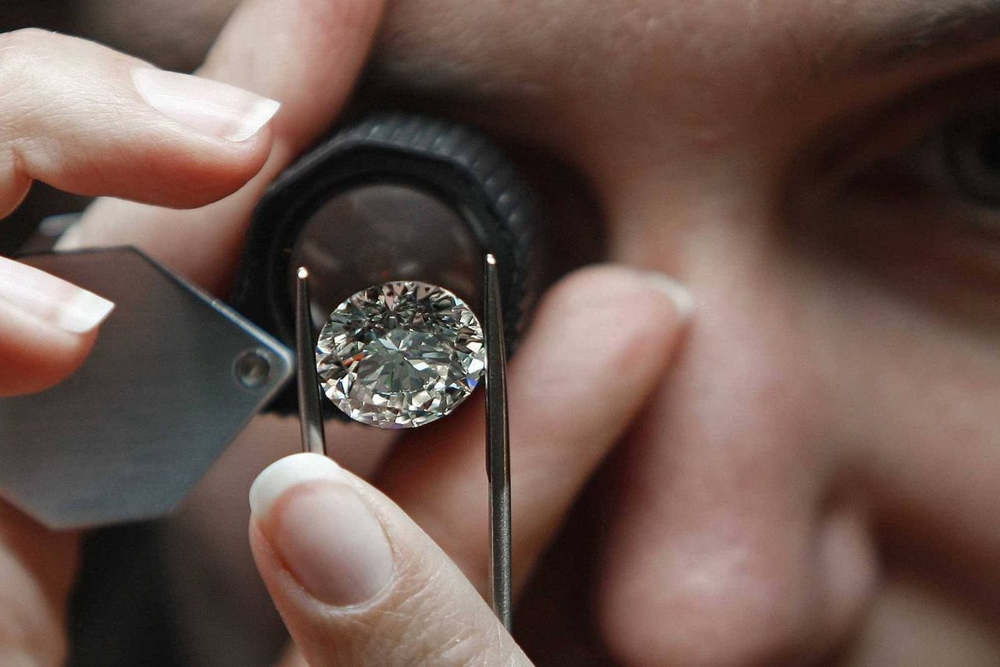
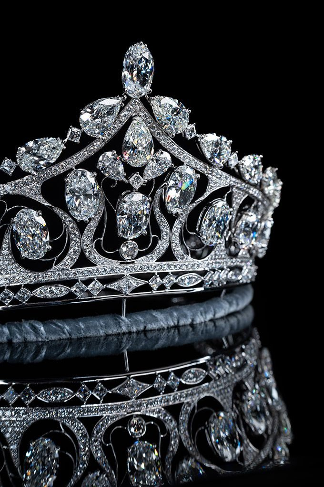

Alta Gioielleria
Gioielli unici e ricercati, pietre preziose rare e accostamenti cromatici d'autore, nell'alta manifattura artigianale italiana.
Alta gioielleria, diamanti e argenteria d'autore. Dal 1996, nella piazza centrale di Cavour, custodiamo le grandi Maison e creiamo gioielli su misura.
Rivenditori autorizzati di alcune fra le più prestigiose maison del mondo.
Concessionari esclusivi Buccellati
Pezzi unici e firmati, scelti e creati con la cura di chi conosce la materia.



Gioielli unici e ricercati, pietre preziose rare e accostamenti cromatici d'autore, nell'alta manifattura artigianale italiana.
Diamanti certificati, gioielli con diamanti e riviere, con la garanzia del nostro laboratorio gemmologico interno.
Argenteria contemporanea dei grandi marchi e argenteria d'epoca — teiere, vassoi, legumiere — dal '700 ai primi del '900.
L'antico anello chevallier in molte varianti d'oro, a sigillo o inciso, con servizio interno di design araldico per stemmi e monogrammi.
Dal disegno alla creazione: nuovi gioielli pensati con voi, o una foggia contemporanea per i vostri preziosi di famiglia.
I monolancetta MeisterSinger e gli orologi Junghans Max Bill, la pelletteria S.T. Dupont e le cristallerie Lalique, Fabergé e Cristal de Paris.
Ogni diamante e ogni pietra di pregio viene esaminato nel nostro laboratorio di analisi gemmologica interno: una garanzia di trasparenza che mettiamo al servizio di chi sceglie Ballarino.
Le perizie sono affidate a gemmologi diplomati presso il GIA — Gemological Institute of America — e l'IGI di Anversa, fra i massimi riferimenti mondiali nella classificazione delle gemme.

Un riconoscimento raro per una gioielleria di provincia: Ballarino è insignita del brevetto di Fornitore della Real Casa, concesso da S.A.R. il Principe Amedeo di Savoia, e dei brevetti delle Case Reali di Bulgaria e Portogallo.
Un'eredità di fiducia che custodiamo in ogni creazione — dall'incisione araldica al gioiello su misura.
Pezzi unici e numerati, realizzati interamente a mano e ispirati alla storia della Real Casa italiana. Una linea esclusiva, già esposta al Museo del Gioiello di Vicenza.

Era il 1988 quando un giovanissimo Giovanni Battista Ballarino, sotto l'attenta guida del Maestro braidese Giuseppe Sbodio, realizzava il suo capolavoro e veniva consacrato Orafo. Da allora il nome Ballarino è sinonimo di qualità, serietà e raffinatezza.
L'8 dicembre 1996, insieme alla sorella Chiara — disegnatrice diplomata all'Accademia di Belle Arti di Brera — si aprivano le porte dell'esposizione Ballarino, al piano terra del Palazzo dei Conti Bottiglia di Salvoux, sulla piazza centrale di Cavour.
«Un gioiello è un'emozione che dura nel tempo.»
Ti aspettiamo in Via Giolitti 58, a Cavour. Scrivici per un appuntamento, una valutazione o una creazione su misura: ti rispondiamo noi.